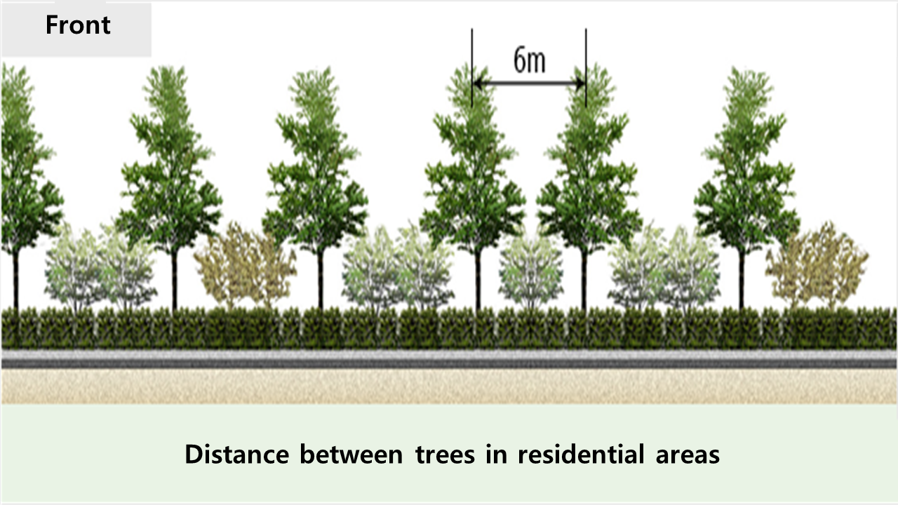

4 Policy
4.1 2030 Seoul Plan - Particulate Matter (PM) Policy
This week covers the way we can use remote sensing to assist in implementing data-driven local-, country-, regional-level policies, while in compliance to global agendas. As a case study, we will look into Seoul’s city plan - the biggest city plan in South Korea -, with special focus on the PM-related policies.
4.2 4.1 Summary
4.2.1 4.1.1 Context
According to NASA, Seoul, a capital city in South Korea, has some of the worst air pollution levels globally. Between 2009 and 2013, the average concentration of PM10 in Seoul was higher than that in many other major cities, including Los Angeles, Tokyo, Paris, and London. This severe pollution has caused health and environmental issues. To breathe cleaner air, people in Korea purchase masks and air purifiers, and the country struggles to reduce the PM levels.
Consequences:
Health effects:
Higher mortality - PM is attributable to the death of 165 Korean citizens
Air pollution-related diseases - cancer, heart disease, pneumonia and low birth weight
Socio-economic effects:
Economic damage of $ 9 billion a year, due to the decrease in economic activities
Impact on a number of outdoor sports
4.2.2 4.1.2 International Framework
Sustainable Development Goals (SDG)

The Sustainable Development Goals are a set of 17 interconnected aims adopted by all UN member states in 2015. The SDGs provide a common plan for achieving sustainable development by 2030, focusing on ending poverty, promoting peace and prosperity and all. The SDGs are an urgent call for action to create a better future for all people and the planet.
SDGs regarding PM:
UN SDG 03: Ensure healthy lives and promote well-being for all at all ages
Target 3.9: By 2030, substantially reduce the number of deaths and illnesses from hazardous chemicals and air, water and soil pollution and contamination
Indicator 3.9.1: Mortality rate attributed to household and ambient air pollution
UN SDG 11: Make cities and human settlements inclusive, safe, resilient and sustainable
Target 11.6: By 2030, reduce the adverse per capita environmental impact of cities, including by paying special attention to air quality and municipal and other waste management.
Indicator 11.6.2: Annual mean levels of fine particulate matter (e.g. PM2.5 and PM10) in cities (population weighted)
4.2.3 4.1.3 Metropolitan-level Framework
- General Information about Seoul Plan
2030 Seoul Plan is the highest-level city plan in Seoul, South Korea. Provided that Seoul is a capital city in South Korea, its city plan is often considered as significant and determinant as a government-led plan, in terms of its impacts on citizens of Seoul and the country. The plan has 5 focal points which include well-being ,employment, culture, environment and housing/transport, and it presents Seoul’s future vision and outlines the city’s development plan for the next 10 years.
Policy relevant to PM:
Focal Point 4: A city where life thrives/breathes
Target 1: Urban park-led ecological city
Strategy 1.3: Conservation, restoration, and enhancement of urban natural ecosystems for public benefits
Guideline 1.3.4: Enhancement of public benefits of urban forests
- Wide implementation of urban forests within the city
Strategy 1.4: Qualitative improvement and optimisation of urban living environment
Guideline 1.4.1: Reduction in Particulate Matter (PM) and smog
- Promote environmentally-friendly cars such as electric and hybrid vehicles in the transportation sector
- Modify road facilities to prevent the dispersion of PM
- Expand distribution of eco-friendly home boilers and dust-absorbing cleaning vehicles to roads
As we can see, Strategy 1.3 and Strategy 1.4 suggest a number of ways to reduce PM, which is one of the biggest environmental issues in South Korea and highly related to citizen’s life. One of the mitigation actions to deal with the air pollutants identified by the Seoul government is creating urban forests on those areas which are specifically vulnerable to fine dust.
4.2.4 4.1.4 Detailed Guideline for PM Mitigation Urban Forests
Urban Forest Guideline for PM Mitigation entails types of PM reduction activities that will be executed in line with the 2030 Seoul Plan. Following the guideline, a number of technical rules are specified. These rules include types of trees to plant, which areas are targeted for urban forests implementation, and suitable distance between each tree stand and so on.
Furthermore, under the guideline six types of urban forests are categorised so they could reduce the concentration of PM. These are street trees, urban parks, forests around the city, vegetations in schools and river, and green spaces within proximity to residential areas.

4.2.5 4.1.5 Three Types of PM Mitigation Urban Forest Types
The urban forest types can be grouped into 3 types of urban forests in terms of their objective and functionality. These are PM blockage urban forests, PM mitigation urban forests and Wind corridor urban forests.
PM blockage urban forests:
- Dense urban forests with 1,800 trees per ha
- Block PM diffusion
PM mitigation urban forests:
- Between 800 and 1,000 trees per ha
- Enhance PM absorption by urban forests
Wind corridor urban forests:
- 500 trees per ha
- Introduce clean air to city centre
- Enable the outflow of congregated PM within the city due to vehicles and household heating.

4.3 4.2 Application
In this section, I would like to introduce two articles that might help find the most optimal location of PM mitigation urban forests, and some factors that need to be considered in monitoring PM2.5.
4.3.1 4.2.1 Satellite remote sensing of atmospheric particulate matter mass concentration: Advances, challenges, and perspectives
Summary: Remote sensing is an effective measure to map and monitor PM concentrations (Zhang et al. 2021). The study provides a comprehensive overview of the progress made and challenges faced in measuring the concentration of atmospheric particulate matter (PM) using satellite observations over the last 20 years. It examines the development of satellite platforms, sensors, algorithms, and datasets, as well as various methods for estimating PM mass concentrations, which are classified into four categories: univariate regression, chemical transport models (CTM), multivariate regression, and empirical physical approaches. The authors suggest a hybrid method that combines the benefits of these methods to generate accurate and continuous PM concentration maps.
Comment:
I think this study well-emphasised the significance of using satellite-based PM concentration mapping practices for monitoring air quality and managing environmental health. This is crucial in understanding the sources and distribution of PM and identifying effective strategies for mitigation, given the increasing concerns over air pollution and its impacts on human health.
In particular, more studies like this could enable government officials to take data-informed decisions and select the most suitable PM mitigation urban forest types for each particular area. The hybrid method proposed in the study shows promise in addressing the challenges faced in PM mapping practices and improving the accuracy and reliability of PM concentration estimates.
Limitation: It seems necessary to validate and improve this approach and assess its suitability in different regions and weather conditions.
4.3.2 4.2.2 Satellite remote sensing of particulate matter and air quality assessment over global cities
Summary: Gupta et al. (2006) attempts to evaluate the use of aerosol optical thickness (AOT) retrievals from the MODerate resolution Imaging Spectro-radiometer (MODIS) along with ground measurements of PM2.5 mass concentration to assess particulate matter air quality over 26 locations in different global urban areas. The study finds that satellite-derived AOT is a good surrogate for monitoring PM air quality over the earth, but the PM2.5-AOT relationship strongly depends on several factors, including aerosol concentrations, ambient relative humidity, fractional cloud cover, and height of the mixing layer.
Result: The study shows that there is an excellent correlation between satellite and ground-based values, with a linear correlation coefficient of 0.96. It also suggests that the effects of wind speed, cloud cover, and mixing height on particulate matter air quality should also be considered to further apply satellite data for air quality research.
Comment: I would say this study’s findings are meaningful with regards to the AOT’s potential as a substitute for ground-based PM measurements in areas with limited or unavailable ground data. However, the correlation between PM2.5 and AOT is heavily influenced by several factors such as aerosol concentration, relative humidity, cloud cover, and mixing layer height, which must be taken into account. I think the analysis can be benefited from including additional meteorological and ancillary datasets, and remote sensing sensors that provide vertical aerosol distribution. The study provides valuable insights into the use of satellite data for air quality research, but it is necessary to consider the limitations and uncertainties associated with this approach in future studies.

A bit of thought…..
The application of remote sensing to locating the optimal location of PM mitigation urban forests could be linked to the following SDGs:
UN SDG 03: Good Health and Well-Being
- PM causes various health problems, such as lung and heart diseases. The reduction in PM could improve citizen’s health and quality of life.
UN SDG 11: Sustainable Cities and Communities
- Creating urban forests, as a measure to mitigate PM, could not only reduce aereal PM but also contribute to building a safe and resilient built environment from other natural hazards.
4.4 4.3 Reflection
This week’s contents were very different from what we have learnt in the past few months. Understanding policy and how remote sensing could come into play its part in realising the policy’s objective was interesting. The contemplation upon how remote sensing can be applied at a particular context and a site broadened my understanding of where remote sensing can be applied in the policy implementation.
Of course, I am aware that remote sensing is one of many solutions that could assist in achieving policy’s goals, and 1-size-fits-all approach is not sufficient to solve similar problems in different contexts. Thanks to this week’s lecture, however, I could say that I came to understand how we can apply our theoretical and technical knowledge about remote sensing to solve the real problems.
Any considerations?
In the future, I would like to look into environmental policies of developing countries as their contexts might be very different from the example we covered here. For developing countries, economic growth seems to be placed before environment. Consequently, some countries might not have sufficient guidelines to be in line with global agendas, and in worst cases they might not have policies.
Our role in this challenge?
Therefore, it would be very interesting to explore how we can help bridge this gap between country-level policies and global policies by assisting in framing their policies and raising public awareness.
4.5 References
Korea Forest Service. (n.d.) https://english.forest.go.kr/kfsweb/kfs/subIdx/Index.do?mn=UENG (Accessed: 02.02.2022)
Seoul Metropolitan Government. (n.d.) https://www.seoul.go.kr/main/index.jsp (Accessed: 02.02.2022)
United Nations. (n.d.) https://sdgs.un.org/goals (Accessed: 02.02.2022)